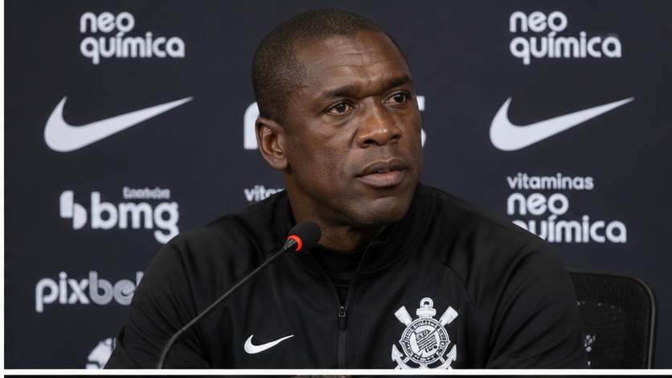

Seedorf rebate pressão por demissão e aposta na reação do Corinthians
Treinador minimiza rumores sobre o futuro no clube e diz que o foco está no trabalho e na busca por vitórias.

Pressão por resultados
Clarence Seedorf chegou ao Corinthians em um momento delicado e enfrenta cobranças pela sequência negativa da equipe. Em entrevista divulgada nesta quinta-feira (29), o técnico minimizou as especulações sobre uma eventual demissão e defendeu a continuidade do trabalho.
O treinador criticou a cultura de trocas frequentes de comando no futebol e ressaltou que a equipe precisa de consistência para reagir.
Foco na próxima partida
Com o Corinthians na zona de rebaixamento, Seedorf afirmou que sua atenção está na preparação do elenco. O confronto contra o Mirassol, nesta sexta-feira (30), às 20h, na Neo Química Arena, aparece como oportunidade de interromper o jejum de vitórias.
O que pensa a Fiel?
A pressão é grande, mas o debate está aberto: dar mais tempo ao treinador ou cobrar mudanças imediatas? Na Shop Fiel, a conversa é de torcedor para torcedor.
Notícia publicada em 30/10/2026. Informações sujeitas a atualização.